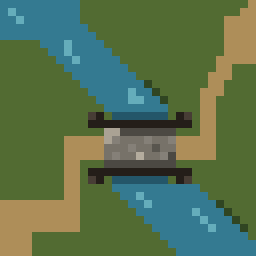
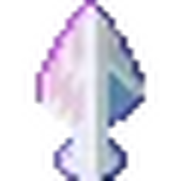

LumBridge
RuneLite with HapticScape
Jagex accounts
Characters
Add an account to play.

RuneLite with HapticScape
Add an account to play.

Checking installation…
Checking installation…
Play starts both apps. You can open HapticScape on its own.
Check the latest published release.
Updates include the launcher, both apps, and Java.
Closing the window hides the launcher to the tray. Tray Exit leaves HapticScape and LumBridge running.
RuneScape imagery © Jagex Ltd. Unofficial launcher; not affiliated with Jagex.